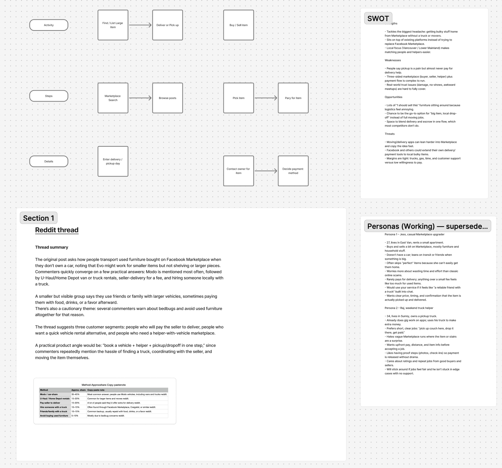
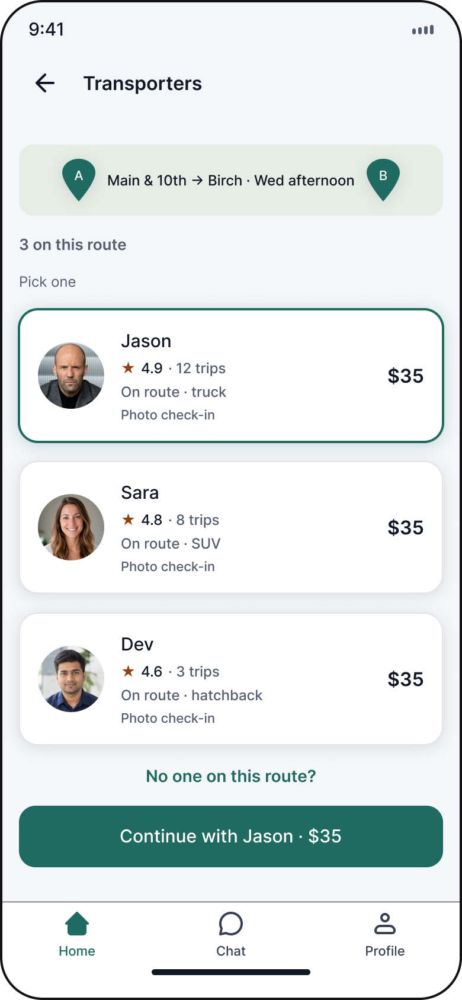
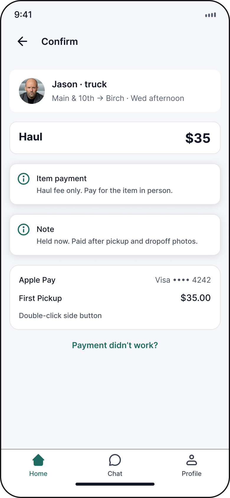
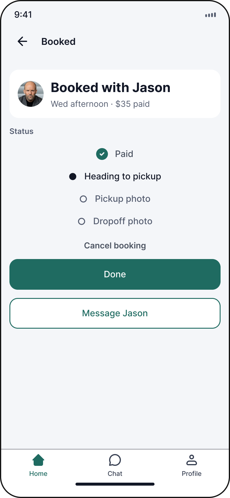

The Last Mile
A UX case study on route-matched pickup for bulky secondhand deals in Metro Vancouver. Team project with Sean Courtney.
4 weeks
- · UX research
- · User flows
- · Wireframing
- · Prototyping
- · Brand
- · Figma
- · FigJam
- · Typeform
- · Figma Slides
People across Metro Vancouver buy and sell bulky things on Facebook Marketplace constantly. When the item is a couch, a desk, or a fridge, moving it from their place to yours is the part nobody has a plan for.
Make handing off a bulky-item pickup feel as safe and affordable as asking a friend, by matching hauls to trips already happening.
Four methods: survey, interviews, community research, and competitive scan. Six survey responses, four qualified after screening for people who had bought or sold secondhand in the past year.
Strong stated demand. Almost no revealed demand. That disagreement is the finding the whole project turns on.
Three different objections: trust, a free default that already works, and price. A paid service has to beat all three at once.
The project started as Payments Pending, built around escrow. Research moved us upstream, to pickup, trust, and who is already on the road.
So Payments Pending became First Pickup, and the money moved out of the product. Item payment stays between buyer and seller on whatever channel they already use. We charge for the haul and nothing else.
Personas
Three roles. One handoff. One persona per user flow. Every trait traces to a survey respondent, an interview, or the community research.


Working board
Everything upstream of the wireframes lived on one FigJam board: the service swimlane, the SWOT, the r/vancouver thread, and the first pass at personas.

Wireframes
Three generations of the same request. Each generation changed one structural idea. None of them were restyles, and each change traces back to something the research told us.


Onboarding
The first screen asks whether you are buying, selling, or driving. Everything after that follows the choice. Customer onboarding explains the flat fee and the photo check. Transporter onboarding walks through routes, vehicles, and how earnings work.


Requesting a haul
Two steps: what and where. Size is a three-way choice with the price on the button. The Confirm screen states plainly that the fee covers the haul only and the item is paid for in person.




Driving a route
Jason sets a home zone and his regular corridors first, then receives jobs that fit them. The offer states earnings before he accepts: $28 of the $35. Route matching is what keeps the fee low enough to compete with a friend who works for free.


Trust without escrow
Photo check-in at both ends of the job, ratings, and in-app chat. It came out of the safety finding directly: people already bring a friend and inspect before paying, so the design gives them evidence rather than reassurance.


Interactive prototype
Click through the full flow: request a haul, get matched, confirm, and track the delivery.
Request flow
Five screens, one haul. From size to match to booked.

Structured walkthroughs with the team and with peers, aimed at finding broken paths, missing screens, and confusing first-run moments. Then five structured sessions with people outside the team.
Outcomes
Nothing has shipped, so there is no market outcome to report and this document does not invent one. We have a business case sized to test the open question. Funding the operation comes after that.
Lessons
We named the wrong problem, and the name recorded it
Payments Pending was an answer, not a question. Escrow appeared in our first how-might-we before we had spoken to a single person, and four people later not one of them wanted it.
Stated demand and paid demand are different quantities
Everyone in our survey said pickup was the worst part. Everyone said they would like a service that fixed it. Nobody would pay for it, and one person had ever paid anything at all.
We researched one side of a two-sided market
Every survey question addressed customers. Jason exists because the business model needs him to, and his persona card says so in red. In a marketplace, supply is not a supporting character.
Order the methods properly
We wrote a survey before running interviews, which meant the questions were built on guesses about what mattered. Interviews first would have told us escrow was dead before we spent a question on it.
Pitch deck